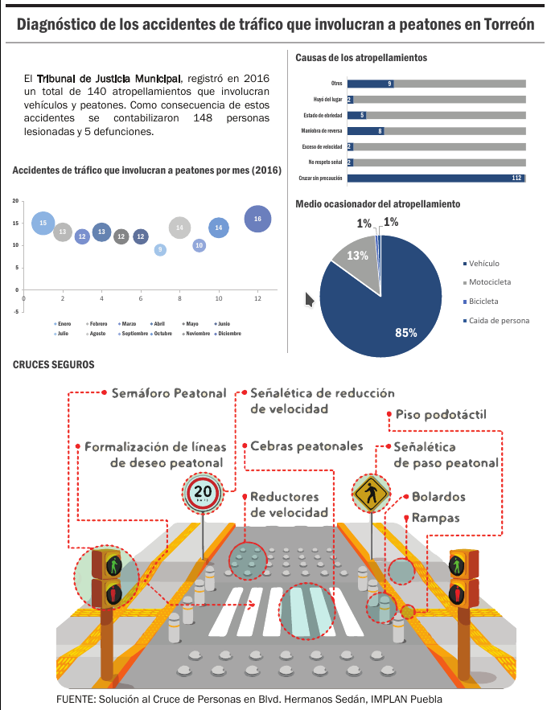

La implementación de puentes peatonales ha sido la solución generalizada para dividir el espacio del vehículo motorizado y el peatón al momento de construir una vialidad. Desafortunadamente esta respuesta no considera las necesidades de movilidad de todos los usuarios, generalmente el diseño es poco accesible lo que limita el número de usuarios que pueden utilizar esta infraestructura, además de que exige a los peatones tomar desvíos verticales y horizontales que requieren más energía e incrementar el tiempo de desplazamiento.
Esta situación provoca que el peatón termine cruzando las calles en los lugares donde considera más convenientes, sin importar el hecho de tener que enfrentarse a situaciones de alto riesgo o de riesgo agregado. (Hidalgo – Solórzano E y col. 2010)
El Tribunal de Justicia Municipal, registro en 2016 un total de 140 atropellamientos que involucran vehículos y peatones. Como consecuencia de estos accidentes se contabilizaron 148 personas lesionadas y 5 defunciones.
La vialidad que más atropellamientos presento en 2016 fue el eje que une Blvd. Revolución y Blvd. Torreón – Matamoros con 17 accidentes, contradictoriamente, este es el eje que cuenta con más puentes peatonales, lo que nos hace pensar que la infraestructura actual, dirigida a la protección de los peatones en la vía pública, no está siendo eficaz.
El Reglamento de Movilidad Urbana, vigente en el municipio de Torreón, menciona en el artículo 80, fracción VI: Utilizar los puentes peatonales y pasos peatonales a desnivel. No es obligatorio su uso cuando el paso a desnivel o puente peatonal se encuentra a más de 50 metros del punto donde se realice el cruce; o las condiciones físicas de la persona así se lo impidan.
En el caso del Blvd. Revolución y Blvd. Torreón – Matamoros, en el 88.23% de los caso la causa del accidente es el cruce sin precaución, sin embargo en sólo 2 de los 17 accidentes el puente peatonal se ubicaba a una distancia igual o menor de 50 metros.
Este tipo de infraestructura además implica una fuerte inversión, El Instituto de Políticas para el Transporte y el Desarrollo en México (ITDP) hace referencia al costo de los puentes peatonales en su documento Cruces a nivel vs puentes peatonales. Dentro de las estadísticas clave se menciona que “El puente peatonal más austero es el que se construye de concreto y cuesta aproximadamente $1.5 millones de pesos; sin embargo, la implementación de dispositivos de control de tránsito puede ser menor a $800,000 pesos”.
No obstante no podemos prescindir en lo absoluto de los puentes peatonales. Su implementación se justifica cuando es necesario cruzar ríos u obstáculos naturales, si es necesario cruzar una autopista, una depresión del terreno o si es necesario cruza vías de tren como es el caso de los 7 puentes distribuidos sobre la Avenida Ferrocarril.
Una opción para evitar la implementación de puentes peatonales sería entonces la disminución de la velocidad con el objetivo de aumentar la seguridad vial. Una velocidad moderada permite que el cono de visión del conductor sea mayor, permitiéndole tener una mejor capacidad de reacción. Las estadísticas demuestran que la probabilidad del peatón a sobrevivir a un accidente es de 90% a una velocidad de 30km/hr mientras que a una velocidad de 60 km/hr la probabilidad de sobrevivir es del 10%.(Reséndiz, H. 2011). La seguridad vial también se relaciona con el ancho de los carriles, esta disminuye si el carril es más ancho que 3.5m; mientras que los carriles más estrechos resultan en velocidades más bajas.
Una segunda opción serían los cruces seguros, estos cruces cuentan con semáforo peatonal, cebras peatonales, señalética de reducción de velocidad, rampas, piso podotáctil, reductores de velocidad y señalética de paso peatonal. La ventaja de implementar estos cruces son: menores distancias y tiempo para cruzar, no se reduce la dimensión de banquetas, se integra en el paisaje urbano, es universalmente accesible, incluyente y requieren menor inversión que un puente peatonal.
Estas estrategias se implementan en el modelo de Calles Completas propuesto por SEDATU. Con las que se busca que un mayor número de personas camine, use bicicleta y transporte público, mientras se reduce los flujos y velocidades de los vehículos particulares. Donde el diseño de los cruces peatonales seguros respeten las líneas de deseo peatonal.

Fuentes:
Hidalgo – Solórzano, E. y col (2010). Motivos de uso y no uso de puentes peatonales en la Ciudad de México: la perspectiva de los peatones. Febrero 5, 2018, de Instituto Nacional de Salud Pública.
Reséndiz, H. (2011). Georreferenciación de puentes peatonales en ciudad de México y su relación con peatones atropellados. Febrero 5, 2018, de Universidad Nacional Autónoma de México.